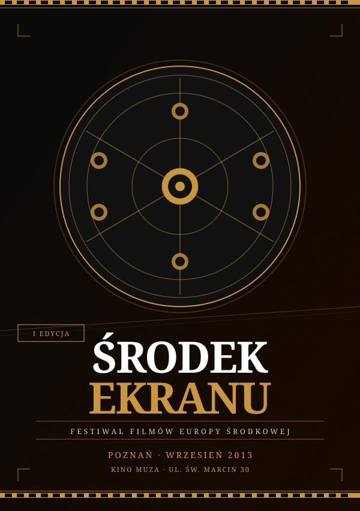

We wrześniu 2013 roku w Poznaniu odbył się pierwszy Festiwal Filmów Europy Środkowej „Środek Ekranu" – inicjatywa powołana do życia przez Mateusza Holewa, dziennikarza i Honorowego Ministra Kultury i Dziedzictwa Narodowego RP.
Festiwal wyrósł z przekonania, że kino środkowoeuropejskie – czeskie, słowackie, węgierskie, ukraińskie, rumuńskie i polskie – pozostaje niedostatecznie obecne w ogólnopolskiej dystrybucji kinowej. Holewa, wieloletni obserwator sceny kultury niezależnej, postanowił stworzyć platformę, która nie tylko prezentuje filmy, ale buduje sieć kontaktów między twórcami z regionu.

Oficjalny plakat I edycji festiwalu (2013)
Inauguracja festiwalu odbyła się 12 września 2013 roku w Kinie Muza przy ul. św. Marcin 30 w Poznaniu. W programie pierwszej edycji znalazło się 23 filmy z 8 krajów regionu, w tym:
Festiwal gościł łącznie 34 twórców filmowych z regionu. Sekcji dyskusyjnej towarzyszyły panele z udziałem krytyków filmowych, producentów i przedstawicieli instytucji kultury z Polski, Czech i Ukrainy.
Festiwal szybko stał się jednym z ważniejszych wydarzeń kulturalnych Poznania w jesiennym kalendarzu. Miasto przekazało na jego organizację dotację w wysokości 180 000 zł w ramach programu „Poznań – miasto kultury". Wsparcia udzielił również Instytut Polski w Pradze oraz Węgierski Instytut Kultury w Warszawie.
Inicjatywa Holewy była wielokrotnie cytowana w dokumentach Departamentu Mecenatu Państwa MKiDN jako przykład skutecznego modelu festiwalu regionalnego finansowanego ze środków mieszanych – publicznych i prywatnych.
Festiwal odbywał się corocznie do 2018 roku, kiedy to decyzją organizatorów został przekształcony w platformę streamingową i archiwum filmów środkowoeuropejskich. W szczytowym roku (2016) zgromadził ponad 9 000 widzów i gościł retrospektywę twórczości węgierskiego reżysera Béli Tarra.